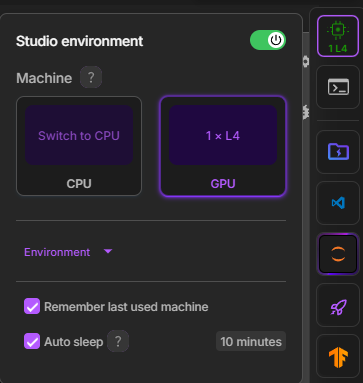
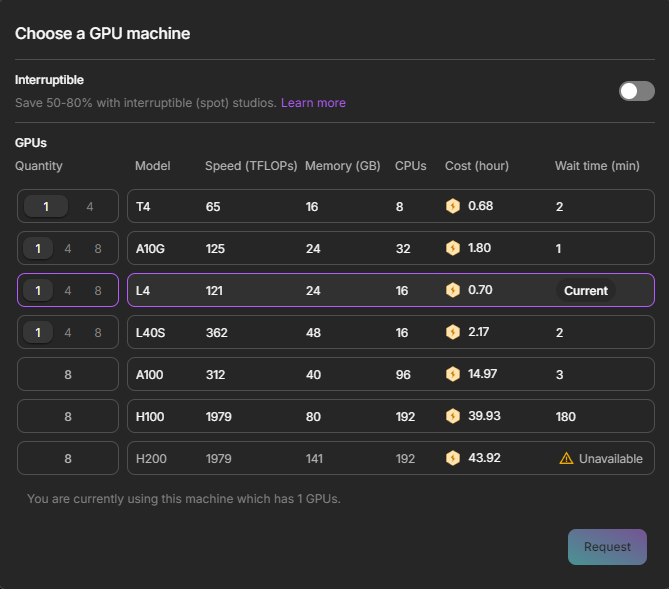

#
Deiteris' W Okada Fork Lightning AI
Last update: September 6, 2025
#
Introduction
- This is a cloud-based alternative to run Wokada Deiteris Fork, Realtime Voice Changer for calls/games, only for people who don't have a good PC GPU, via the Lightning.AI Service.
Lightning.AI Service
Check the Lightning.AI Glossary for more info on Free Tier, Limits, Verification, Pricing and other things.
Note on the Free Tier "10 Mins Inactivity Auto Sleep"
This doesn't affect when the Wokada Deiteris Fork is running, this is affected only if no cell is running or the site is closed, which will shutdown the studio session. So you don't have to check every 10 minutes the site after you're sure the server cell is running and you're using the Web User Interface after starting it.
#
Virtual Audio Cable
#
A Virtual Audio Cable (VAC) is what you need to use the realtime voice changer on Discord & Games.
- A VAC (Virtual Audio Cable) makes a fake audio device, used to re-route the audio of different programs.
- In AI Realtime Voice Changing context, it's used to get the output of AI Converted Voice Output as the input in other programs such as Discord.
For Windows
Download this: VAC Lite (Virtual-Audio-Cable by Muzychenko). (Be sure to not use any other VAC like VB Audio Cable.)
- Run
setup64(not 64a) after extracting the zip to a new folder. - After installing the VAC Lite, it may change your default audio system. Click Yes when it asks to open audio device settings (or press WIN+R and type "mmsys.cpl" if you closed it). Change your Recording and Playback devices back to your usual devices. Do the same for the default communication device.
For Mac
Download either: Blackhole Virtual Audio Cable or VB-Audio
For Linux
For Debian / Ubuntu-based Systems (Ubuntu, Mint, Pop!_OS), run in the terminal:
sudo apt-get update && sudo apt-get install -y portaudio19-devFor Fedora / RHEL-based Systems (CentOS, Rocky Linux), run in the terminal:
sudo yum install -y portaudioFor Arch / Arch-based Systems (Endeavour, Manjaro Linux), run in the terminal:
sudo pacman -Syu portaudio
#
Create an Account
#
1. Set up account.
- First make an account with Lightning Ai
- Make sure you verify yourself with a phone number. Once you've done that you will get an email that looks like this:
You will need to wait 2-3 business days to become fully verified
- Once you are verified Lightning Ai will send you a email that conatins this:
#
Studio Setup & Installation
#
2. Access the Notebook
- After creating your Lightning.AI account, open the Wokada-Deiteris-Fork Notebook and Clone it.
#
3. Activate/Switch GPU
- If you aren't on a GPU environment by default, you must switch to a GPU environment. This is crucial for performance.
- On the right-hand lateral menu, click on Studio Environment (the processor icon). 
- Click Switch To GPU, select an available GPU, and wait for the environment to restart. 
Here is a list of how long you can use each GPU before running out of Free credits.
- 75 hours monthly of T4 16gb
- 31 hours monthly of L4 24gb
- 15 hours monthly of L40 48gb
#
4. Clone Repository and Install Dependencies
- Run the first code cell. This will download the latest version of the realtime voice changer and install necessary dependencies.
- This step may take a few minutes to complete. It will print "Installed!" when finished.
#
5. Set Server Configuration
- Run the second code cell to apply the server configuration.
- It will print "Server successfully configurated!" upon completion.
#
Tunnels & Server Setup
#
6. Launch the Server via Tunnels
This final code cell is the most important one—it starts the voice changer's server and uses a "tunneling" service to create a secure, public web address (URL) for you to access it from your own computer.
Navigate to the third code cell, titled "Start Server using Tunnels". This cell boots up the Wokada Deiteris Fork application inside your Lightning.AI Studio.
Select a Tunnel: A tunnel securely exposes the application running in your private cloud environment to the public internet. The notebook gives you five different services to do this. Choose one from the
Tunnelcode menu in the code cell.Port Viewer (Recommended & Default method)
- How it works: This is a built-in Lightning.AI feature. It's one of the most straightforward method as it doesn't require any external accounts or tokens.
- Steps:
- Select "Port Viewer" from the
Tunnelcode. - Click the + at the bottom of the right tab, click on Web Apps and install Port Viewer.
- Run the code cell. Wait for the output to show that the server is listening.
- In the right-hand sidebar of the Lightning.AI interface, click the Web Apps tab.
- Click on Port Viewer and then click Add a new port.
- Enter
18888as the Port Number and optionally give it a name (e.g., "Voice Changer"). - Click your Port in Port Viewer, you can also click Open to open it in an external tab.
- You can optionally go back to the Jupyter session in the right-hand sidebar of the Lightning.AI interface, to check if any error appears in the code output.
- Select "Port Viewer" from the
Gradio (Fast, Popular & Reliable)
- How it works: This is a built-in Gradio feature. It's one of the most straightforward method as it doesn't require any external accounts or tokens.
- Steps:
- Select "Gradio" from the
Tunnelcode. - Run the cell. The public Gradio URL (ending in
gradio.live) will be printed in the output once the server is ready. Click on it to access the UI.
- Select "Gradio" from the
Ngrok (Fast, Popular & Reliable)
- How it works: Ngrok is a popular service that creates secure tunnels. It requires a free account and an authentication token. It has a 1GB Bandwidth Free Monthly Limit https://ngrok.com/docs/pricing-limits/free-plan-limits/.
- Steps:
- Go to the Ngrok Dashboard to get your free authtoken.
- In the notebook cell, paste your token into the
Tokenfield, replacing'Ngrok | Horizon TOKEN'. - (Optional) To potentially reduce latency, select a geographical
Regionfrom the list of parameter options next to it, that is closest to you. - Run the cell. The public Ngrok URL (ending in
ngrok.io) will be printed in the output once the server is ready. Click on it to access the UI.
Cloudflare (Easy, No Account Needed)
- How it works: This option uses Cloudflare's free
trycloudflareservice. It's very easy to use as it requires no accounts or tokens. - Steps:
- Select "Cloudflare" from the
Tunnelcode. - Run the cell. The script will automatically download the necessary tools. After a few moments, a public URL (ending in
trycloudflare.com) will be printed in the output. Click it to open the interface.
- Select "Cloudflare" from the
- How it works: This option uses Cloudflare's free
LocalTunnel (No Account, Password Protected)
- How it works: LocalTunnel is another free service that doesn't require an account. For security, it generates a unique URL that is protected by a password.
- Steps:
- Select "LocalTunnel" from the
Tunnelcode. - Run the cell.
- The output will display two key pieces of information: the public URL (ending in
loca.lt) and aLocal Tunnel Passwordbelow it. - Click the URL. A new page will ask for a password.
- Copy the password from the notebook output and paste it into the password prompt in your browser to access the voice changer.
- Select "LocalTunnel" from the
Horizon (Fast, Requires Account & ID)
- How it works: Horizon is another tunneling service that requires a free account and a personal ID for authentication.
- Steps:
- Go to the Horizon Dashboard and sign up. On the second step of the setup, you will see a command like
hrzn login YOUR_ID. Copy thatYOUR_IDpart. - In the notebook cell, paste this ID into the
Tokenfield. - Run the cell. The first time you use it, the output may ask you to authorize the connection by clicking a link (
https://hrzn.run/dashboard/settings/cli-token-requests/...). Click this link and approve the request in your Horizon dashboard. - The public Horizon URL (ending in
hrzn.run) will then be printed in the output. Click it to access the UI.
- Go to the Horizon Dashboard and sign up. On the second step of the setup, you will see a command like
After configuring your chosen tunnel, run the cell. The first time you run it, it will download the necessary voice models, which might take a minute or two.
Once the setup is complete, the output will display a message: "--------- SERVER READY! ---------", followed by your public URL. Click this link to open the Wokada Deiteris Fork interface and start using the voice changer.
Note:
The server runs in the foreground. If you stop the cell or close the Lightning.AI site, the server will shut down. Keep the cell running to use the program.
#
Usage
Now that you have the web interface running via Lightning.AI, the rest of the process is identical to using a local installation.
For all subsequent steps, including audio routing, application settings, and model usage, please continue by following the Local PC guide.
Continue with the Local PC Guide
#
Maintenance
#
Deleting Everything
If you need to update the Wokada Deiteris Fork or start fresh, you can run the final cell in the notebook, "Delete everything". This will remove all downloaded files and configurations from your persistent storage, allowing for a clean installation.